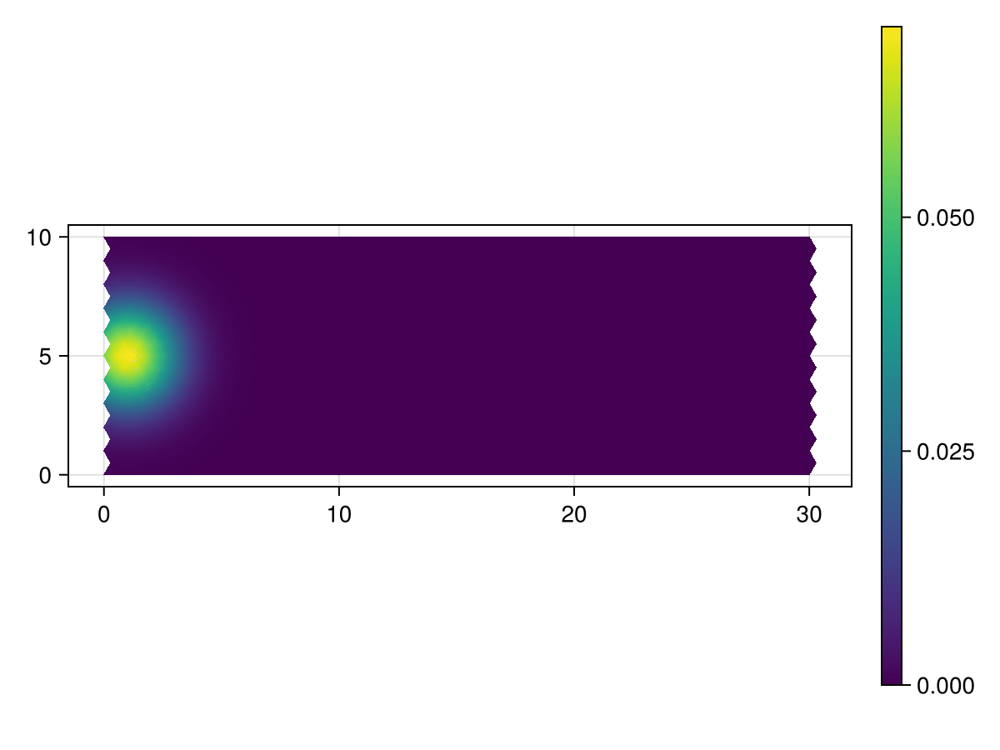

Simulation Setup
This tutorial showcases some of the other features included in the Decapodes.jl package. Currently, these features are the treatment of boundary conditions and the simulation debugger interface. To begin, we set up the same advection-diffusion problem presented in the Overview section. As before, we define the Diffusion, Advection, and Superposition components, and now include a Boundary Condition (BC) component. By convention, BCs are encoded in Decapodes by using a ∂ symbol. Below we show the graphical rendering of this boundary condition diagram, which we will use to impose a Dirichlet condition on the time derivative of concentration at the mesh boundary.
using Catlab
using DiagrammaticEquations
using Decapodes
Diffusion = @decapode begin
C::Form0
ϕ::Form1
# Fick's first law
ϕ == k(d₀(C))
end
Advection = @decapode begin
C::Form0
ϕ::Form1
V::Constant
ϕ == ∧₀₁(C,V)
end
Superposition = @decapode begin
(C, C_up)::Form0
(ϕ, ϕ₁, ϕ₂)::Form1
ϕ == ϕ₁ + ϕ₂
C_up == ⋆₀⁻¹(dual_d₁(⋆₁(ϕ)))
end
BoundaryConditions = @decapode begin
(C, C_up)::Form0
# Temporal boundary
∂ₜ(C) == Ċ
# Spatial boundary
Ċ == ∂C(C_up)
end
to_graphviz(BoundaryConditions)
-->
<!-- Title: G Pages: 1 -->
<svg width="158pt" height="183pt"
viewBox="0.00 0.00 158.47 183.43" xmlns="http://www.w3.org/2000/svg" xmlns:xlink="http://www.w3.org/1999/xlink">
<g id="graph0" class="graph" transform="scale(1 1) rotate(0) translate(4 179.4264)">
<title>G</title>
<polygon fill="%23ffffff" stroke="transparent" points="-4,4 -4,-179.4264 154.468,-179.4264 154.468,4 -4,4"/>
<!-- n1 -->
<g id="node1" class="node">
<title>n1</title>
<ellipse fill="none" stroke="%23000000" cx="24.0416" cy="-123.8198" rx="24.0833" ry="10.7143"/>
<text text-anchor="middle" x="24.0416" y="-120.1198" font-family="Times,serif" font-size="14.00" fill="%23000000">C:Ω₀</text>
</g>
<!-- n3 -->
<g id="node3" class="node">
<title>n3</title>
<ellipse fill="none" stroke="%23000000" cx="65.0416" cy="-51.6066" rx="26.3269" ry="10.7143"/>
<text text-anchor="middle" x="65.0416" y="-47.9066" font-family="Times,serif" font-size="14.00" fill="%23000000">Ċ:Ω•</text>
</g>
<!-- n1&%2345;>n3 -->
<g id="edge4" class="edge">
<title>n1&%2345;>n3</title>
<path fill="none" stroke="%23000000" d="M29.9159,-113.4734C36.8389,-101.2801 48.4052,-80.9084 56.3622,-66.8936"/>
<polygon fill="%23000000" stroke="%23000000" points="57.9635,-67.6176 58.9104,-62.4055 54.9199,-65.8895 57.9635,-67.6176"/>
<text text-anchor="middle" x="54.0416" y="-84.0132" font-family="Times,serif" font-size="14.00" fill="%23000000">∂ₜ</text>
</g>
<!-- n2 -->
<g id="node2" class="node">
<title>n2</title>
<ellipse fill="none" stroke="%23000000" cx="108.0416" cy="-123.8198" rx="42.3529" ry="10.7143"/>
<text text-anchor="middle" x="108.0416" y="-120.1198" font-family="Times,serif" font-size="14.00" fill="%23000000">C_up:Ω₀</text>
</g>
<!-- n2&%2345;>n3 -->
<g id="edge5" class="edge">
<title>n2&%2345;>n3</title>
<path fill="none" stroke="%23000000" d="M101.6968,-113.1645C94.3927,-100.898 82.3404,-80.6577 74.0627,-66.7563"/>
<polygon fill="%23000000" stroke="%23000000" points="75.4742,-65.7063 71.4125,-62.3056 72.467,-67.497 75.4742,-65.7063"/>
<text text-anchor="middle" x="99.5416" y="-84.0132" font-family="Times,serif" font-size="14.00" fill="%23000000">∂C</text>
</g>
<!-- n5 -->
<g id="node5" class="node">
<title>n5</title>
</g>
<!-- n3&%2345;>n5 -->
<g id="edge3" class="edge">
<title>n3&%2345;>n5</title>
<path fill="none" stroke="%23000000" d="M65.0416,-40.5973C65.0416,-31.135 65.0416,-17.7454 65.0416,-9.4807"/>
<polygon fill="%23000000" stroke="%23000000" points="66.7917,-9.3096 65.0416,-4.3096 63.2917,-9.3096 66.7917,-9.3096"/>
</g>
<!-- n4 -->
<g id="node4" class="node">
<title>n4</title>
</g>
<!-- n4&%2345;>n1 -->
<g id="edge1" class="edge">
<title>n4&%2345;>n1</title>
<path fill="none" stroke="%23000000" d="M63.2799,-171.2949C58.6386,-165.6792 45.7621,-150.0998 36.0151,-138.3067"/>
<polygon fill="%23000000" stroke="%23000000" points="37.121,-136.8977 32.5867,-134.1586 34.4231,-139.1275 37.121,-136.8977"/>
</g>
<!-- n4&%2345;>n2 -->
<g id="edge2" class="edge">
<title>n4&%2345;>n2</title>
<path fill="none" stroke="%23000000" d="M66.8893,-171.2949C71.742,-165.6966 85.1781,-150.1962 95.3891,-138.4163"/>
<polygon fill="%23000000" stroke="%23000000" points="96.7586,-139.5081 98.7113,-134.5837 94.1139,-137.2156 96.7586,-139.5081"/>
</g>
</g>
</svg>
)
As before, we compose these physics components over our wiring diagram.
compose_diff_adv = @relation (C, V) begin
diffusion(C, ϕ₁)
advection(C, ϕ₂, V)
bc(C, C_up)
superposition(ϕ₁, ϕ₂, ϕ, C_up, C)
end
draw_composition(compose_diff_adv)
-->
<!-- Title: G Pages: 1 -->
<svg width="610pt" height="677pt"
viewBox="0.00 0.00 609.64 677.14" xmlns="http://www.w3.org/2000/svg" xmlns:xlink="http://www.w3.org/1999/xlink">
<g id="graph0" class="graph" transform="scale(1 1) rotate(0) translate(4 673.1383)">
<title>G</title>
<polygon fill="%23ffffff" stroke="transparent" points="-4,4 -4,-673.1383 605.6383,-673.1383 605.6383,4 -4,4"/>
<!-- n1 -->
<g id="box1" class="node">
<title>n1</title>
<ellipse fill="none" stroke="%23000000" cx="91.89" cy="-91.39" rx="41.5911" ry="18"/>
<text text-anchor="middle" x="91.89" y="-87.69" font-family="Serif" font-size="14.00" fill="%23000000">diffusion</text>
</g>
<!-- n7 -->
<!-- junction -->
<g id="junction1" class="node">
<title>n7</title>
<ellipse fill="%23000000" stroke="%23000000" cx="91.89" cy="-445.7483" rx="2.5" ry="2.5"/>
<text text-anchor="middle" x="83.39" y="-452.0483" font-family="Serif" font-size="14.00" fill="%23000000">C</text>
</g>
<!-- n1&%2345;&%2345;n7 -->
<g id="edge1" class="edge">
<title>n1&%2345;&%2345;n7</title>
<path fill="none" stroke="%23000000" d="M91.89,-109.4499C91.89,-177.43 91.89,-415.4593 91.89,-443.12"/>
</g>
<!-- n9 -->
<!-- junction -->
<g id="junction3" class="node">
<title>n9</title>
<ellipse fill="%23000000" stroke="%23000000" cx="18.5" cy="-268.5691" rx="2.5" ry="2.5"/>
<text text-anchor="middle" x="8" y="-274.8691" font-family="Serif" font-size="14.00" fill="%23000000">ϕ₁</text>
</g>
<!-- n1&%2345;&%2345;n9 -->
<g id="edge8" class="edge">
<title>n1&%2345;&%2345;n9</title>
<path fill="none" stroke="%23000000" d="M84.4491,-109.3539C67.3946,-150.527 26.4167,-249.4565 19.4996,-266.1559"/>
</g>
<!-- n2 -->
<g id="box2" class="node">
<title>n2</title>
<ellipse fill="none" stroke="%23000000" cx="269.0691" cy="-519.1383" rx="45.8316" ry="18"/>
<text text-anchor="middle" x="269.0691" y="-515.4383" font-family="Serif" font-size="14.00" fill="%23000000">advection</text>
</g>
<!-- n2&%2345;&%2345;n7 -->
<g id="edge2" class="edge">
<title>n2&%2345;&%2345;n7</title>
<path fill="none" stroke="%23000000" d="M237.3931,-506.0176C191.2078,-486.8871 109.2333,-452.9321 94.269,-446.7337"/>
</g>
<!-- n8 -->
<!-- junction -->
<g id="junction2" class="node">
<title>n8</title>
<ellipse fill="%23000000" stroke="%23000000" cx="269.0691" cy="-593.6383" rx="2.5" ry="2.5"/>
<text text-anchor="middle" x="261.0691" y="-599.9383" font-family="Serif" font-size="14.00" fill="%23000000">V</text>
</g>
<!-- n2&%2345;&%2345;n8 -->
<g id="edge6" class="edge">
<title>n2&%2345;&%2345;n8</title>
<path fill="none" stroke="%23000000" d="M269.0691,-537.1727C269.0691,-555.4316 269.0691,-582.1728 269.0691,-590.8257"/>
</g>
<!-- n10 -->
<!-- junction -->
<g id="junction4" class="node">
<title>n10</title>
<ellipse fill="%23000000" stroke="%23000000" cx="446.2483" cy="-445.7483" rx="2.5" ry="2.5"/>
<text text-anchor="middle" x="435.7483" y="-452.0483" font-family="Serif" font-size="14.00" fill="%23000000">ϕ₂</text>
</g>
<!-- n2&%2345;&%2345;n10 -->
<g id="edge10" class="edge">
<title>n2&%2345;&%2345;n10</title>
<path fill="none" stroke="%23000000" d="M300.7452,-506.0176C346.9304,-486.8871 428.905,-452.9321 443.8693,-446.7337"/>
</g>
<!-- n3 -->
<g id="box3" class="node">
<title>n3</title>
<ellipse fill="none" stroke="%23000000" cx="269.0691" cy="-18" rx="18" ry="18"/>
<text text-anchor="middle" x="269.0691" y="-14.3" font-family="Serif" font-size="14.00" fill="%23000000">bc</text>
</g>
<!-- n3&%2345;&%2345;n7 -->
<g id="edge3" class="edge">
<title>n3&%2345;&%2345;n7</title>
<path fill="none" stroke="%23000000" d="M262.1235,-34.7682C231.0291,-109.8367 105.5823,-412.6921 92.9218,-443.2572"/>
</g>
<!-- n11 -->
<!-- junction -->
<g id="junction5" class="node">
<title>n11</title>
<ellipse fill="%23000000" stroke="%23000000" cx="446.2483" cy="-91.39" rx="2.5" ry="2.5"/>
<text text-anchor="middle" x="425.2483" y="-97.69" font-family="Serif" font-size="14.00" fill="%23000000">C_up</text>
</g>
<!-- n3&%2345;&%2345;n11 -->
<g id="edge12" class="edge">
<title>n3&%2345;&%2345;n11</title>
<path fill="none" stroke="%23000000" d="M285.7377,-24.9044C326.0536,-41.6038 426.7752,-83.324 443.789,-90.3713"/>
</g>
<!-- n4 -->
<g id="box4" class="node">
<title>n4</title>
<ellipse fill="none" stroke="%23000000" cx="519.6383" cy="-268.5691" rx="62.2967" ry="18"/>
<text text-anchor="middle" x="519.6383" y="-264.8691" font-family="Serif" font-size="14.00" fill="%23000000">superposition</text>
</g>
<!-- n4&%2345;&%2345;n7 -->
<g id="edge4" class="edge">
<title>n4&%2345;&%2345;n7</title>
<path fill="none" stroke="%23000000" d="M483.9044,-283.3706C386.7216,-323.625 122.9648,-432.8767 94.407,-444.7057"/>
</g>
<!-- n4&%2345;&%2345;n9 -->
<g id="edge9" class="edge">
<title>n4&%2345;&%2345;n9</title>
<path fill="none" stroke="%23000000" d="M457.182,-268.5691C330.1898,-268.5691 51.2791,-268.5691 21.153,-268.5691"/>
</g>
<!-- n4&%2345;&%2345;n10 -->
<g id="edge11" class="edge">
<title>n4&%2345;&%2345;n10</title>
<path fill="none" stroke="%23000000" d="M512.1974,-286.5331C495.1429,-327.7062 454.165,-426.6356 447.2479,-443.3351"/>
</g>
<!-- n4&%2345;&%2345;n11 -->
<g id="edge13" class="edge">
<title>n4&%2345;&%2345;n11</title>
<path fill="none" stroke="%23000000" d="M512.1974,-250.6052C495.1429,-209.4321 454.165,-110.5026 447.2479,-93.8032"/>
</g>
<!-- n12 -->
<!-- junction -->
<g id="junction6" class="node">
<title>n12</title>
<ellipse fill="%23000000" stroke="%23000000" cx="594.1383" cy="-268.5691" rx="2.5" ry="2.5"/>
<text text-anchor="middle" x="596.6383" y="-274.8691" font-family="Serif" font-size="14.00" fill="%23000000">ϕ</text>
</g>
<!-- n4&%2345;&%2345;n12 -->
<g id="edge14" class="edge">
<title>n4&%2345;&%2345;n12</title>
<path fill="none" stroke="%23000000" d="M582.1686,-268.5691C586.1999,-268.5691 589.4833,-268.5691 591.5846,-268.5691"/>
</g>
<!-- n5 -->
<!-- n5&%2345;&%2345;n7 -->
<g id="edge5" class="edge">
<title>n5&%2345;&%2345;n7</title>
<path fill="none" stroke="%23000000" d="M41.2005,-496.4378C46.1286,-491.5096 81.2417,-456.3966 89.9429,-447.6953"/>
</g>
<!-- n6 -->
<!-- n6&%2345;&%2345;n8 -->
<g id="edge7" class="edge">
<title>n6&%2345;&%2345;n8</title>
<path fill="none" stroke="%23000000" d="M269.0691,-667.796C269.0691,-660.5218 269.0691,-608.2957 269.0691,-596.1551"/>
</g>
</g>
</svg>
)
DiffusionAdvection_cospan = oapply(compose_diff_adv,
[Open(Diffusion, [:C, :ϕ]),
Open(Advection, [:C, :ϕ, :V]),
Open(BoundaryConditions, [:C, :C_up]),
Open(Superposition, [:ϕ₁, :ϕ₂, :ϕ, :C_up, :C])])
DiffusionAdvection = apex(DiffusionAdvection_cospan)
to_graphviz(DiffusionAdvection)
When this is scheduled, Decapodes will apply any boundary conditions immediately after the impacted value is computed. This implementation choice ensures that this boundary condition holds true for any variables dependent on this variable, though also means that the boundary conditions on a variable have no immediate impact on the variables this variable is dependent on.
In the visualization below, we see that the final operation executed on the data is the boundary condition we are enforcing on the change in concentration.
to_graphviz(DiffusionAdvection)Next we import the mesh we will use. In this case, we are wanting to impose boundary conditions and so we will use the plot_mesh from the previous example instead of the mesh with periodic boundary conditions. Because the mesh is only a primal mesh, we also generate and subdivide the dual mesh.
using CombinatorialSpaces
using CairoMakie
plot_mesh = loadmesh(Rectangle_30x10())
# Generate the dual mesh
plot_mesh_dual = EmbeddedDeltaDualComplex2D{Bool, Float64, Point3{Float64}}(plot_mesh)
# Calculate distances and subdivisions for the dual mesh
subdivide_duals!(plot_mesh_dual, Circumcenter())
fig = Figure()
ax = CairoMakie.Axis(fig[1,1], aspect = AxisAspect(3.0))
wireframe!(ax, plot_mesh)
figFinally, we define our operators, generate the simulation function, and compute the simulation. Note that when we define the boundary condition operator, we hardcode the boundary indices and values into the operator itself. We also move the initial concentration to the left, so that we are able to see a constant concentration on the left boundary which will act as a source in the flow. You can find the file for boundary conditions here. The modified initial condition is shown below:
using LinearAlgebra
using ComponentArrays
using MLStyle
include("../boundary_helpers.jl")
function generate(sd, my_symbol; hodge=GeometricHodge())
op = @match my_symbol begin
:k => x -> 0.05*x
:∂C => x -> begin
boundary = boundary_inds(Val{0}, sd)
x[boundary] .= 0
x
end
x => error("Unmatched operator $my_symbol")
end
return op
end
using Distributions
c_dist = MvNormal([1, 5], [1.5, 1.5])
c = [pdf(c_dist, [p[1], p[2]]) for p in plot_mesh_dual[:point]]
fig = Figure()
ax = CairoMakie.Axis(fig[1,1], aspect = AxisAspect(3.0))
mesh!(ax, plot_mesh; color=c[1:nv(plot_mesh)])
figAnd the simulation result is then computed and visualized below.
using OrdinaryDiffEq
sim = eval(gensim(DiffusionAdvection))
fₘ = sim(plot_mesh_dual, generate)
velocity(p) = [-0.5, 0.0, 0.0]
v = ♭(plot_mesh_dual, DualVectorField(velocity.(plot_mesh_dual[triangle_center(plot_mesh_dual),:dual_point]))).data
u₀ = ComponentArray(C=c)
params = (V = v,)
prob = ODEProblem(fₘ, u₀, (0.0, 100.0), params)
sol = solve(prob, Tsit5());
# Plot the result
times = range(0.0, 100.0, length=150)
colors = [sol(t).C for t in times]
extrema
# Initial frame
fig = Figure()
ax = CairoMakie.Axis(fig[1,1], aspect = AxisAspect(3.0))
pmsh = mesh!(ax, plot_mesh; color=colors[1], colorrange = extrema(vcat(colors...)))
Colorbar(fig[1,2], pmsh)
framerate = 30
# Animation
record(fig, "diff_adv_right.gif", range(0.0, 100.0; length=150); framerate = 30) do t
pmsh.color = sol(t).C
end"diff_adv_right.gif"
[ Info: Page built in 53 seconds.
[ Info: This page was last built at 2025-03-15T00:51:38.995.